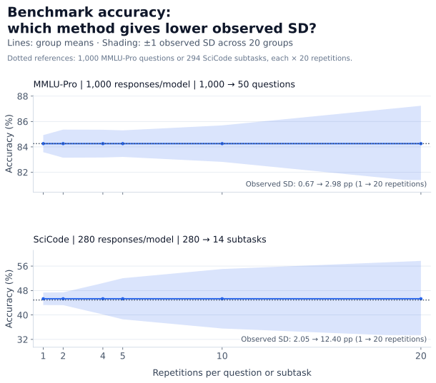
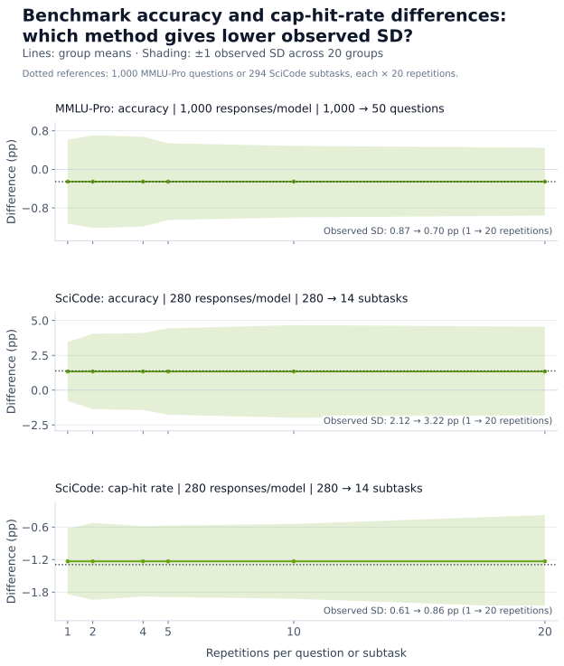
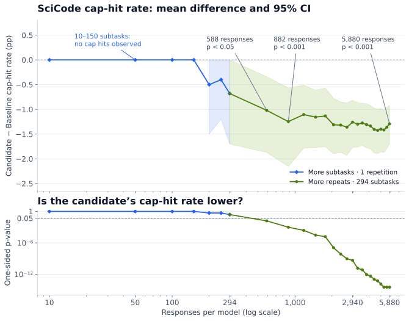
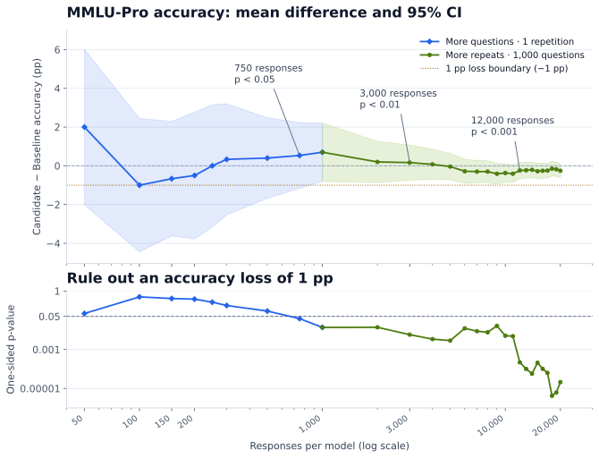

Guidelines for Evaluating Models Optimized with NVIDIA Model Optimizer#
Introduction#
When you optimize a reasoning model with NVIDIA Model Optimizer, how do you verify improvements without overlooking regressions? Average accuracy can hide doomed reasoning loops (repetitive reasoning that continues until the output-token limit is reached), missing answers, inappropriate guessing, or excessive output length.
You may assume that reliable evaluation requires many repetitions. But could repeating by default waste time? How many questions and repetitions do you need to measure improvements and rule out regressions?
This guide helps you evaluate models quickly and reliably during optimization experiments.
For standardized evaluation and acceptance checks before releasing optimized models, follow the ModelOpt evaluation skill and ModelOpt results-comparison skill. For benchmark commands, see the LLM evaluation examples.
What should you measure, and how?
Show where the model improves or worsens: use paired statistical tests to distinguish model differences from evaluation noise.
Check for regressions: use confidence intervals and non-inferiority tests to rule out unacceptable regression, even if the baseline is not shown to be better.
Assess model reliability: measure doomed reasoning loops, missing answers, and whether the model abstains appropriately.
Measure inference efficiency: compare output length, including reasoning tokens.
How can you evaluate faster?
Choose between question-level and repetition-level analysis: match the approach to your goal and evaluation budget.
Collect as much evaluation data as you need: use pilot results to choose enough questions or repetitions to assess regression.
Test known weaknesses on a focused subset: failure-prone questions can reveal targeted improvements with fewer responses; check broader performance separately.
What should you measure, and how?#
We compare two NVFP4 Qwen3.6-35B-A3B checkpoints. Baseline underwent post-training quantization (PTQ) and quantization-aware distillation (QAD), preserving accuracy but increasing doomed reasoning loops. Candidate was trained directly from Baseline using Kahneman–Tversky Optimization (KTO), which learns from desirable and undesirable responses, aiming to reduce those loops while preserving accuracy. We use MMLU-Pro, SciCode and AA-Omniscience to illustrate these evaluation guidelines. See the reproducibility notes.
Prefer Candidate if it improves at least one metric and meets your non-inferiority criteria for the others. Regressions highlight areas to improve.
Show where the model improves or worsens#
We first average each model’s correctness across repetitions of each question, then compute Candidate − Baseline for each question. We calculate t-based 95% confidence intervals across these paired question-level differences. Changes are reported in percentage points (pp), not relative percentages. For simplicity, this example treats questions and SciCode subtasks as independent.
Our primary question is whether Candidate is better than Baseline. A one-sided paired t-test can detect improvement with less data than a two-sided test for any difference. “Yes” marks p < 0.05; “no evidence” means improvement was not established. Reverse-direction p-values are reported for context.
Choose test directions before inspecting results. We use p < 0.05 for each test, without a stricter threshold for testing multiple metrics. Testing more metrics gives noise more opportunities to appear as an improvement.
Benchmark |
Baseline |
Candidate |
Difference [95% CI], pp |
Candidate higher, p-value |
Baseline higher, p-value (context) |
|---|---|---|---|---|---|
MMLU-Pro |
84.51% |
84.26% |
−0.26 [−0.61, +0.10] |
0.920 — no evidence |
0.080 |
SciCode |
43.52% |
44.90% |
+1.38 [+0.08, +2.67] |
0.019 — yes |
0.981 |
AA-Omniscience |
21.80% |
21.92% |
+0.12 [−0.64, +0.88] |
0.381 — no evidence |
0.619 |
On SciCode, the candidate is more accurate than the baseline (+1.38 pp; p = 0.019).
Check for regressions#
No evidence of a difference does not establish no regression. Choose an acceptable accuracy-loss margin, then use a non-inferiority test to assess whether the loss is smaller. The checks below use one-sided paired t-tests.
Rule out an accuracy loss of |
MMLU-Pro p-value |
SciCode p-value |
AA-Omniscience p-value |
|---|---|---|---|
2.0 pp |
<0.001 — yes |
<0.001 — yes |
<0.001 — yes |
1.0 pp |
<0.001 — yes |
<0.001 — yes |
0.002 — yes |
0.5 pp |
0.088 — no evidence |
0.002 — yes |
0.056 — no evidence |
0.1 pp |
0.804 — no evidence |
0.013 — yes |
0.288 — no evidence |
Assess model reliability#
Average accuracy alone does not show whether a model behaves reliably: also measure doomed reasoning loops, missing answers, and whether it abstains when appropriate.
Measure |
Recommendation |
|---|---|
Doomed reasoning loops |
Use cap-hit rates to screen for potential loops, then inspect the text to confirm repetition. A cap hit reaches the configured response-token limit (131,072 here). |
Missing final answers |
Report how often responses contain no final answer. |
Abstention |
Report intentional abstentions separately from incorrect or missing answers; AA-Omniscience is an example benchmark. |
Rare failures can make t-based approximations unreliable, so we use paired-bootstrap 95% confidence intervals and one-sided paired permutation tests for the rates below.
Doomed reasoning loops#
The candidate has fewer cap hits on both SciCode and AA-Omniscience (p < 0.001).
Benchmark |
Baseline cap rate |
Candidate cap rate |
Difference [95% CI], pp |
Candidate lower, p-value |
Candidate higher, p-value (context) |
|---|---|---|---|---|---|
MMLU-Pro |
0.05% (10/20,000) |
0.03% (6/20,000) |
−0.02 [−0.07, +0.02] |
0.244 — no evidence |
0.878 |
SciCode |
1.29% (76/5,880) |
0.00% (0/5,880) |
−1.29 [−1.70, −0.92] |
<0.001 — yes |
1.000 |
AA-Omniscience |
1.77% (106/6,000) |
0.85% (51/6,000) |
−0.92 [−1.38, −0.48] |
<0.001 — yes |
1.000 |
Missing final answers#
The candidate also reduced missing final answers on SciCode and AA-Omniscience (p < 0.001).
Benchmark |
Baseline |
Candidate |
Difference [95% CI], pp |
Candidate lower, p-value |
Candidate higher, p-value (context) |
|---|---|---|---|---|---|
MMLU-Pro |
0.05% (10/20,000) |
0.03% (6/20,000) |
−0.02 [−0.07, +0.02] |
0.244 — no evidence |
0.878 |
SciCode |
1.31% (77/5,880) |
0.00% (0/5,880) |
−1.31 [−1.72, −0.94] |
<0.001 — yes |
1.000 |
AA-Omniscience |
1.77% (106/6,000) |
0.85% (51/6,000) |
−0.92 [−1.38, −0.48] |
<0.001 — yes |
1.000 |
Abstention#
AA-Omniscience public v1 distinguishes abstention from incorrect guessing. The Codex assistant graded responses against reference answers, blinded to checkpoint identity. The reported configuration was GPT-6.1 Sol (xhigh); a pinned judge snapshot was not independently verified. Deliberate abstentions exclude empty answers and uncertain guesses.
Measure |
Baseline |
Candidate |
Difference [95% CI], pp |
Candidate higher, p-value |
Candidate lower, p-value (context) |
|---|---|---|---|---|---|
Deliberate abstention |
13.30% (798/6,000) |
14.55% (873/6,000) |
+1.25 [+0.23, +2.27] |
0.009 — yes |
0.993 |
Measure |
Baseline |
Candidate |
Difference [95% CI], pp |
Candidate lower, p-value |
Candidate higher, p-value (context) |
|---|---|---|---|---|---|
Incorrect answers |
62.03% (3,722/6,000) |
61.72% (3,703/6,000) |
−0.32 [−1.57, +0.97] |
0.322 — no evidence |
0.696 |
The candidate abstained more often (p = 0.009), with no evidence of fewer incorrect answers (p = 0.322).
Measure inference efficiency#
Compare mean and median completion tokens, including reasoning, to assess how much generation each answer requires.
For mean length, we use the same question-level paired t-tests and t-based 95% confidence intervals as accuracy.
Benchmark |
Baseline: mean / median |
Candidate: mean / median |
Change: mean / median, % |
Mean change [95% CI], tokens |
Candidate shorter, p-value |
Candidate longer, p-value (context) |
|---|---|---|---|---|---|---|
MMLU-Pro |
2,803 / 2,157 |
2,759 / 2,145 |
−1.6% / −0.6% |
−44 [−99, +11] |
0.057 — no evidence |
0.943 |
SciCode |
6,188 / 3,205 |
3,048 / 1,802 |
−50.7% / −43.8% |
−3,140 [−3,666, −2,614] |
<0.001 — yes |
1.000 |
AA-Omniscience |
4,280 / 1,756 |
3,097 / 1,705 |
−27.6% / −2.9% |
−1,183 [−1,764, −602] |
<0.001 — yes |
1.000 |
The candidate uses fewer tokens on average on SciCode and AA-Omniscience (p < 0.001).
How can you evaluate faster?#
When reducing question coverage, choose a representative subset before inspecting results and use the same question IDs for both models. See Data preparation for how we selected the benchmark questions.
Choose between question-level and repetition-level analysis#
Both approaches are valid. Choose based on your goal and the balance between precision and evaluation speed:
Estimate accuracy on a fixed benchmark. Treat its question set as a black box: compute one average score per complete run, then estimate uncertainty across independent runs. Multiple complete passes can be expensive.
Get accurate results quickly for the domain represented by a benchmark. Use representative questions: compute an average score per question across repetitions, then estimate uncertainty across questions. With sufficiently independent questions, this approach can support faster experimentation.
Is question-level analysis reliable on real benchmarks compared with repetition-level analysis? We compare the two approaches by spending the same response budget on more unique questions or more repetitions per question, then measuring how much the resulting scores vary. Each allocation produces 20 observed scores, using 1,000 responses per model for MMLU-Pro and 280 for SciCode. In the plots below, solid lines show means; shading shows ±1 observed standard deviation (SD). Means stay fixed because every allocation uses the same saved response pool: 1,000 questions × 20 repetitions for MMLU-Pro (20,000 responses per model) and 280 subtasks × 20 repetitions for SciCode (5,600 responses per model). Lower observed SD means more consistent score estimates across these groups for the same response budget.


For both MMLU-Pro and SciCode, greater question coverage gives more reliable Candidate accuracy estimates, with lower observed SD. Along the x-axis, more repetitions mean fewer unique questions or subtasks within the same response budget.
Comparing Candidate and Baseline on the same questions can reduce variation caused by question difficulty. MMLU-Pro’s accuracy difference has slightly less observed spread with more repetitions; SciCode’s accuracy and cap-hit-rate differences have less spread with more subtask coverage. Check the metric you intend to use for the comparison.


The useful budget allocation can differ for absolute scores and paired model differences.
Future benchmarks could make experimentation faster by providing representative, approximately independent questions sampled from their intended domain, and documenting dependencies between related tasks.
Collect as much evaluation data as you need#
You may not need the full evaluation budget to detect an improvement or rule out an unacceptable regression. The data needed depends on the model pair, metric, acceptable regression margin, and statistical target.
How many responses show fewer cap hits on SciCode?
We first compare random subsets of 10–294 subtasks with one repetition, then add repetitions on all 294 subtasks. Among the tested sizes, the p-value first fell below 0.05 at 588 responses, and below 0.001 at 882 per model. The full 5,880 responses were unnecessary to establish evidence of fewer candidate cap hits at those thresholds.


How many responses rule out a 1 pp accuracy loss on MMLU-Pro?
We first compare subsets of 50–1,000 questions with one repetition, keeping approximately the same subject proportions, then add repetitions on all 1,000 questions. To rule out a 1 pp accuracy loss, the non-inferiority test first reached p < 0.05 with one repetition on 750 questions. It first reached p < 0.01 at 3,000 responses and p < 0.001 at 12,000 per model among the tested sizes.


Test known weaknesses on a focused subset#
Freeze a subset from earlier baseline failures to screen for targeted improvements. We report the 11 held-out subtasks, with ten matched repetitions—110 responses per model.
Benchmark |
Baseline cap rate |
Candidate cap rate |
Difference [95% CI], pp |
Candidate lower, p-value |
Candidate higher, p-value (context) |
|---|---|---|---|---|---|
SciCode |
1.29% (76/5,880) |
0.00% (0/5,880) |
−1.29 [−1.70, −0.92] |
<0.001 — yes |
1.000 |
Focused subset |
10.91% (12/110) |
0.00% (0/110) |
−10.91 [−18.18, −5.45] |
0.004 — yes |
1.000 |
The focused held-out subset detects fewer candidate cap hits with 110 responses per model. Use it for a quick check of known weaknesses, then evaluate broader accuracy and reliability separately.